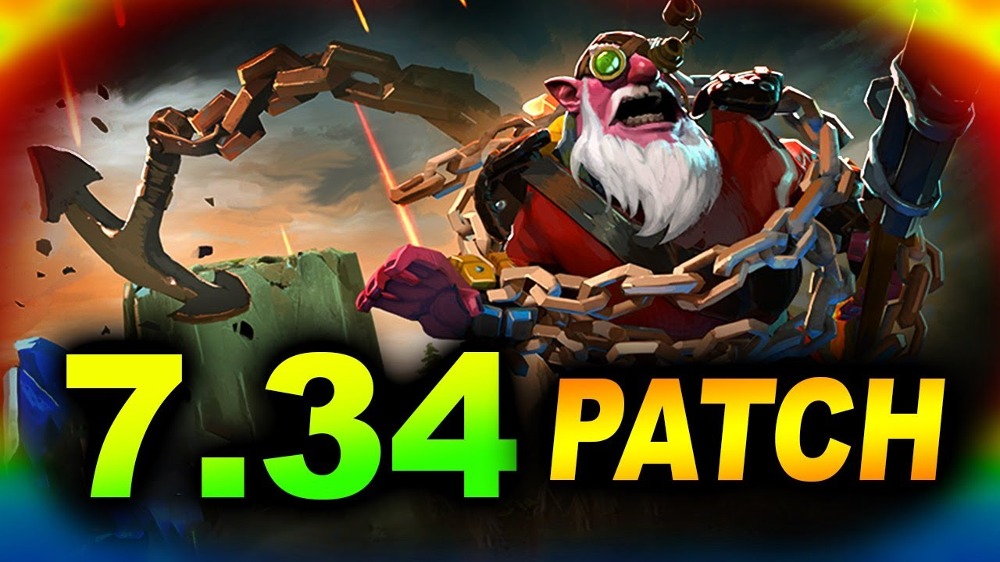

Культові онолення гри


"Dota 2" - це мультиплеєрна онлайн-гра в жанрі MOBA (Мультиплеєрна онлайн битва арени). Гравці обирають персонажів, відомих як "герої", з унікальними навичками та характеристиками. Гра поділяється на дві команди по п'ять гравців кожна, які протистоять одна одній на великій карті. Мета - знищити фортеці суперників, здобути перевагу та контролювати ключові пункти на карті. "Dota 2" визначається стратегією, спільною грою та вміннями гравців у використанні своїх героїв для перемоги в бою.
| # | Оновлення | Випуск | Опис |
|---|---|---|---|
| 1 | 6.83D | 2014 рік | Цей патч впроваджував багато змін у героїв, предмети та баланс гри. Він був важливим для Dota 2, оскільки визначав новий мета-гейм та забезпечив більше різноманіття вибору героїв. |
| 2 | 6.86 | 2015 рік | Цей патч також вніс численні зміни в героїв та предмети, і став важливим для того, щоб зробити гру більш збалансованою та цікавою. |
| 3 | 7.00 | 2016 рік | Патч 7.00 був особливо важливим, оскільки він впровадив нову карту, додавши нові регіони та змінивши геймплей. Також, вперше був представлений новий герой, Monkey King. |